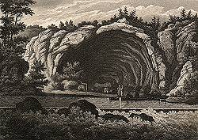

| In Deutsch |
| In Deutsch |
Historic Caves
|  |
| Image: Die Veteranische Höhle, engraving. |
Historic Caves or Cave Stories? Several famous stories from the Greeks, through the middle ages until today are connected with caves. Even legends often contain a cavern. Caves were always a part of mans life, so they are part of his stories.
We will try to collect some stories of this type, and maybe there is a real background or even better: a real cave behind the story.
- The story about Robert the Bruce and the Spider.
- Emperor Barbarossa, sleeping in his subterannean chateau.
- Merlin the Wizard is the next one sleeping.
- King Arthur does not sleep alone, he is accompanied by hundred knights.
- Kentucky Cave Wars is a story from the 20th century.